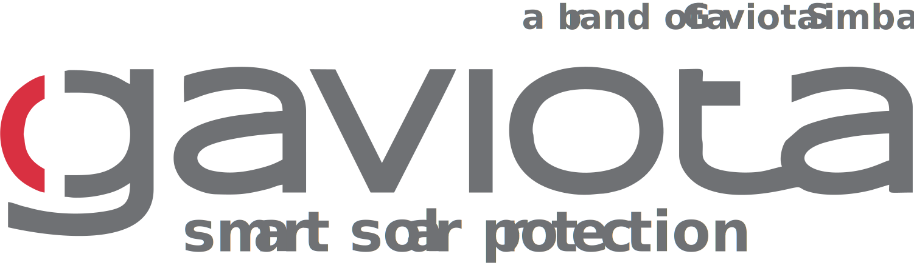

Вертикальное остекление
Революционная система сдвижного рамного остекления, отличается высокой функциональностью, эргономичностью и невероятной эстетикой. В открытом состоянии подъёмно раздвижные окна служат стеклянной балюстрадой, отделяющим ресторанную площадку от пешеходной зоны. В раскрытом состоянии образуют прозрачную стену с панорамным обзором. Широко применяется как жилых, так и в коммерческих помещениях.

{kind=link}
{kind=link}
{kind=link}
{kind=link}
{kind=link}
{kind=link}
{kind=link}
{kind=link}
{kind=link}
{kind=link}
Вертикальное остекление – оригинальная и функциональная система с удобным моторизированным управлением. Сдвижные панели из ударопрочного закалённого стекла движутся вверх-вниз по вертикали. Отсутствие распашных створок даёт возможность устанавливать систему рядом с оживлёнными пешеходными дорожками, одновременно обеспечивая отличную вентиляцию.
Алюминиевая конструкция устойчива к коррозии и может быть окрашена в любой цвет по каталогу RAL.
Ударопрочное закалённое стекло препятствует пробиванию отверстия и выдерживает удары различной силы, предотвращая несанкционированное проникновение. Используется безопасное 8 мм стекло. При необходимости система, может состоять из 2, 3 или 4 стекол.
Основное применение: оформление летних площадок кафе и ресторанов, уличных баров, открытых террас.
Материалы:
• Экструдированный алюминий;
• Нержавеющая сталь;
• Закаленное стекло.
Производитель комплектующих - компания  (Испания)
Неограниченный обзор:
Система имеет небольшие рамы и миниатюрные створки, что открывает возможность неограниченного обзора.
Экономия пространства:
В системе стекло двигается вертикально вверх или вниз, благодаря чему можно ставить столы и стулья не ограничивая пространство.
Гильотинная система:
Если система открывается вниз, то нижнее стекло остается фиксированным, а остальные подвижными.Если же система открывается вверх, то тогда фиксированным стеклом становится верхнее и система собирается на вверх.
Элементы остекления Decolife:
1. Закаленное стекло, толщиной 10мм;
2. Кассетный профиль;
3. Ремень;
4. Тормозной механизм;
5. Приводной профиль;
6. Изоляционный уплотнитель;
7. Стекольный профиль;
Модульность конструкции
Перголы Decolife возможно комбинировать в различных модульных вариациях. Это позволяет покрывать любые площади и воплощать смелые архитектурные проекты.
2 панели
3 панели
4 панели
Эффектная и эргономичная система подъёмно-раздвижных окон, легка в управлении и обладает высокими эксплуатационными характеристиками. Гильотинные окна, вопреки распространённому мнению, чрезвычайно тёплые и обладают отличными антивандальными характеристиками. Легкая, но выносливая алюминиевая конструкция, не деформируется при охлаждении и нагревании, что предотвращает её искривление. Именно поэтому подъёмно-вертикальные окна могут оборудоваться абсолютно любым типом остекления. Вертикальные окна –слайдеры совмещают в себе эстетику и практичность, а также эргономичны в использовании.
.gif)
Моторизированное гильотинное остекление обладает массой достоинств, особо актуальных для оборудования открытых летних кафе и ресторанов, а также террас и веранд, расположенных на крыше зданий. Сдвижная стеклянная стена устанавливается в 4-х положениях, которые обеспечивают отличную вентиляцию, прекрасно зонируют помещение, создавая по всему периметру стеклянную балюстраду, визуально расширяют пространство и надёжно защищают от непогоды.
Вертикальное остекление прекрасный выбор для оформления частной оранжереи. Остекление зимнего сада требует особого подхода. Вертикально –подъёмные раздвижные окна обеспечат высокую светопроницаемость, тепло и отличную циркуляцию воздуха в помещении. К тому же Вам не придётся закрывать и открывать каждое окно вручную, встроенная автоматика сделает это за Вас и максимально упростит управление системой любого размера. комплектацию входит комплект ручек и механизм .
Гибкие и одновременно прочные прозрачные вставки, полноценно заменяют классическое остекление. Защищают от проникновения насекомых, поддерживают комфортную температуру и оптимальный уровень освещения.

Невероятно красивая и практичная система, с широким спектром применения в жилых и коммерческих объектах. Изготавливается из высококачественного алюминия и 10 мм закалённого стекла. В базовую комплектацию входит фурнитура и механизм блокировки.
Вертикальное остекление практично и очень удобно в использовании. Широко используется в оформлении кафе и ресторанов, террас любого типа и летних веранд. Нестандартное раскрытие створок решает ряд проблем и задач, которые обычно возникают при остеклении летних площадок.
Преимущества:
• Экономия и зонирование пространства
Вертикально-подъёмные окна значительно экономят пространство. Это позволяет использовать их при остеклении кафе и ресторанов, расположенных вблизи оживлённых пешеходных дорожек. В раскрытом состоянии неподвижная часть образует стеклянную балюстраду, которая создаёт надёжный барьер, отделяющий зону кафе от улицы.
• Комфортабельность
Гильотинное остекление абсолютно непроницаемо для ветра, дождя и холода, вертикальные створки не хлопают на ветру, легко моются и обладают высоким уровнем противоударной стойкости.
• Лёгкое управление
Система амортизации обеспечивает мягкое и бесшумное закрывание. Легко управляется одной рукой и надёжно фиксируется как в открытом, так и в закрытом положении. При остеклении кафе и ресторана, система полностью автоматизируется и управляется с помощью пульта.
• Климат-контроль
Регулируемые встроенные фильтры обеспечивают постоянный приток свежего воздуха даже при полностью закрытых окнах. Тёплый профиль утеплит помещение на 50%, поэтому в холодный сезон площадку можно оборудовать ИК – обогревателем и использовать её круглый год. Это особенно актуально для ресторанов и кафе.
• Дизайн
Гильотинное остекление придаст любому заведению особую изюминку и статусный вид. Оригинальное и необычное расположение окон гармонично обрамит площадку любого размера и выделит её на фоне однотипных заведений.
Сферы использования
Оптимальными вариантами применения гильотинного остекления стали следующие сферы:
Остекление кафе и ресторана
Создаёт стильное и уютное место для приятного времяпрепровождения для дружеских и романтических встреч. Одновременно утепляет и зонирует помещение, придавая ему красивый панорамный вид.
Остекление бара
Создаёт дополнительный стеклянный прилавок с панорамным обзором. Помогает продемонстрировать ассортимент покупателям и одновременно оборудовать удобное место для небольших компанейских посиделок.
Остекление террас и веранд
Удобная и практичная система, полностью избавить Вас от проблемы хлопающих на ветру окон и разлетающихся занавесок. Имеет встроенную защиту от взлома и защиту от детей. Плотный непродаваемый профиль оснащается скрытой системой вентиляции, для микро-проветривания помещения. Обеспечивает дополнительное утепление.
Остекление зимнего сада
Вертикально-подъёмные окна идеальны для оформления зимней оранжереи. Стёкла фиксируются в 3-х положениях: полное среднее и малое открытие. Это позволяет максимально точно регулировать уровень проникновения солнечных лучей и циркуляцию воздуха. Высокая светопроницаемость окон благотворно влияет на развитие и рост растений.
Технические особенности
Вертикальное, или гильотинное, остекление один их видов структурного остекления. Технология используется при создании стеклянного фасада, расположенного в строго вертикальной плоскости или с отклонением не более чем на 15° от вертикали. Закалённые 8-10 мм стёкла системы устанавливаются в герметичные алюминиевые рамы со специальным резиновым уплотнителем. Система крепления специальным силиконовым герметиком, переносит все нагрузки на несущую металлическую конструкцию и обеспечивает лёгкое скольжение оконных рам в профиле.
Заказать и купить вертикальное остекление в Москве, Краснодаре и Республике Крым
Цена на поворотно-сдвижную систему остекления складывается из нескольких факторов. Основными из них стали габариты конструкции и дополнительные опции. Для точного просчёта Вы можете связаться с менеджерами компании DecoPlus любым удобным для Вас способом и получить приятный бонус по цене.